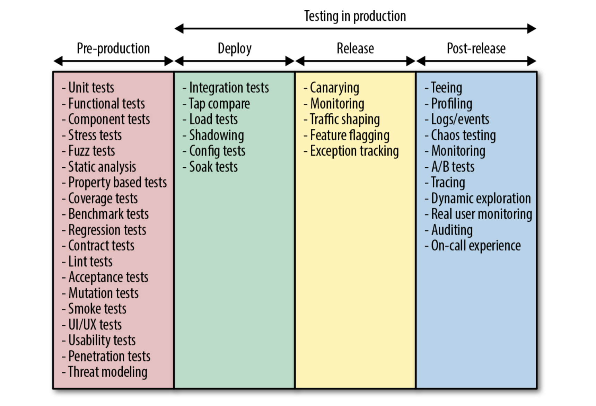
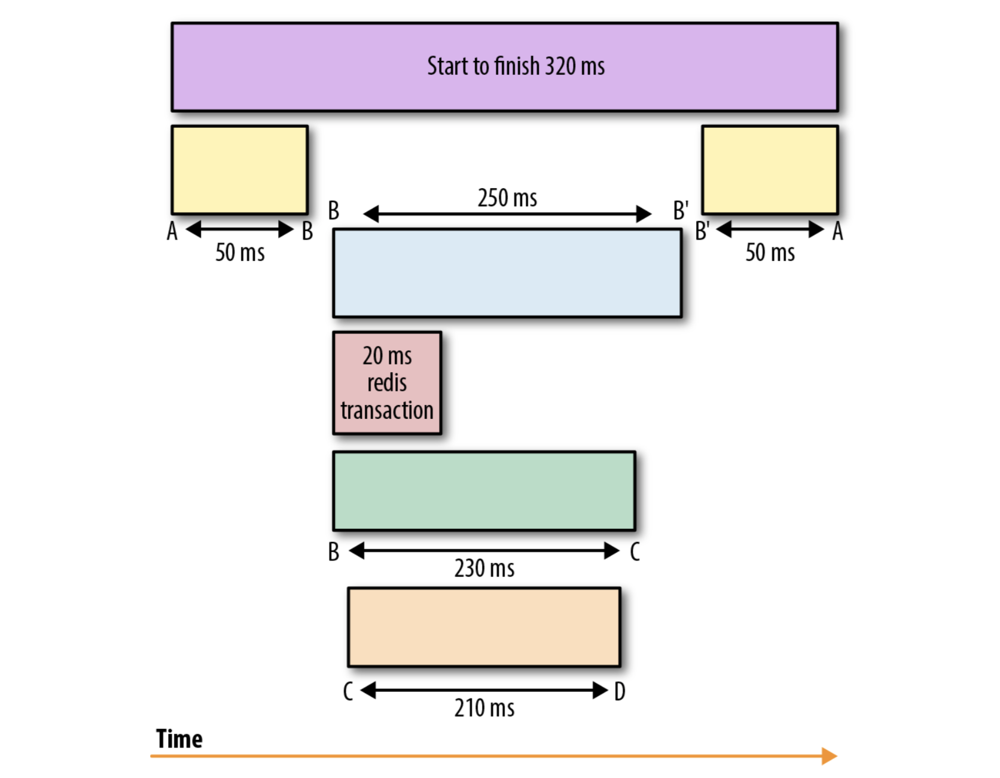

Observability
Why we need to observe
As we've seen, our services and our infrastructure are more distributed and ephemeral day by day. Our systems are more advanced and every one have different reliability targets, requirements and guarantees. All the cloud services (and custom services if configured properly) provides a robust abstraction over network and hardware failures, which means that as software developers we must ensure that our applications are good enough to survive with that networking and scheduling abstractions. We need to gain visibility into the behavior of our applications.
Traditionally the systems engineers had some dashboards with operational monitoring and alerting (CPU/Memory/...), and that was enough to know if the application was going well or no. Nowadays with distributed systems we need to go further in order to ensure the correct behavior of our system. That's Observability, it's more than logs, metrics and traces. In the most abstract and complete way, observability is a property of a system that has been designed, built, tested, deployed, operated, monitored, maintained and evolved in acknowledgment of this facts:
- No complex system is ever fully healthy
- Distributed Systems are pathologically unpredictable
- It's impossible to predict the myriad states of partial failure the parts of the system might end up
- Failure needs to be embraced in every phase: system design, implementation, testing, deploying and operation
- Ease of debugging is a cornerstone for the maintenance and evolution of robust systems
Monitoring and Observability
Observability is not a substitute to monitoring, observability is a superset of monitoring, which means that to achieve observability you will need good monitoring, but you will need more things.
We'll focus on some techniques of observability, but there are many more, observability it's more a team mindset than a set of tools or techniques. All the system has to be designed with some concepts in mind:
- A system need to be prepared to be tested in a realistic manner.
- A system can be deployed gradually and the roll-back/roll-forward are easy, fast and can be automatic
- A system must be able to report data points about his health and behavior.
Monitoring
Monitoring is the way to report the overall health of the system and create alerts. The monitorized data can be very different, RAM/CPU used, requests/s, latency, DNS lookup, etc. The key factor of monitoring is that is predictable (you can assume that if some metric goes higher than X you have a problem), it affects the end users, and needs human intervention as soon as possible.
There are two general types of monitoring (You can learn more here):
- Blackbox monitoring. You observe the systems from the outside, this is the most common monitoring done in the companies, and it refers to metrics like CPU, disk space, memory, load averages, etc.
- Whitebox monitoring. You observe the applications running instead of the systems, with distributed systems is more common. It can be metrics like SQL queries running, number of users in an application, requests with error or requests with success, etc.
Even though whitebox monitoring is used more and more, we can't forget blackbox monitoring, specially when you depend of external services (like a database hosted by a third party company) that you can only do blackbox monitoring.
Alerting
Monitoring data must provide a global view of the health of a distributed system exposing high-level metrics over time across all components (load balancers, caches, databases, services). An alert must have some monitoring data attached with the ability to drill down into components and systems to diagnose the scopes and the nature of the fault.
Additionally, in the occurrence of an alert, the monitoring data should be able to provide visibility into the impart of the failure and the effect of any fix deployed. Also, for the best on-call experience, all alerts need to be actionable, which means that you have to be able to know what to do with the alert data.
There are two set of metrics for monitoring purposes:
- USE methodology analyses the system performance. The metrics will be used for measuring utilization, saturation and errors or system resources, eg: memory, CPU, divide errors, queue length.
- RED methodology analyses the applications. This method calls for monitoring the request rate, error rate and duration of request. Really necessary for monitoring request-driven applications.
Coding and testing in production
As we've seen, observability is a state of mind where the whole system has been developed with it in mind, and one important point in this is not rely only on pre-production testing. It's important, but being able to test in production elevates the resilience of your code and your observability. In order to achieve that state, the whole team will need to code and test for failure, instead of coding for success.
There are three main things to write code for failure:
Operational semantics of the application
The developer must be aware of the operational semantics of the application, for example:
- How the service will be deployed
- How an application handles signals
- How it registers with service discovery
- How it discovers upstreams
- How graceful the restarts will be
- How the configuration will be received
- The concurrency model
- ...
There are many operational questions that nowadays the platform abstract from the developer, and it's important to be aware of all of them.
Operational characteristics of the dependencies
You need to know, not only your operational characteristics, but the ones of your dependencies, so you are able to know if you want to use the default values of the dependencies or override it with your own value.
- How your cache library/service will work
- The configuration of your database library, the connection pool size, timeouts, etc
Debuggable code
If your code is debuggable, you will be able to ask questions to your application when you are in trouble. For this you'll need to understand the instrumentation of choice (metrics, logs, exception traces, ...) and the pros/cons. With that knowledge, being able to pick the best combination of instrumentation for your service requirements. It seems an easy task, but it's not easy at all.
Testing for failure
Writing unit tests is important, but you will need to do more testing in order to improve your confidence in the application. At the end, unit testing only shows the happy path of your scope (and probably heavily mocked). But we know that when the complexity of the systems grows, it will fail in more complex ways that you can't predict.
Lately more and more ways of testing in production have appeared, and many of them will need you to write your application in order to ease that task.
Here are the phases of testing, as you can see there are a myriad of tests.

Testing in production is hard, and not eliminate all the system failures, but it will build confidence in the reliability of complex distributed systems
Logging
An event log is an immutable, timestamped record of events that happened over time. There are three main forms of event logs:
- Plain-text, the most common format of logs, this is just free text
[2018-11-14T18:50:18.003Z] INFO: hello/40026 on rock.local: hi ironhack
- Structured, in recent days it's the beloved way to go, usually the format is JSON
{
"time": "2018-11-14T18:50:18.003Z",
"level": "info",
"msg": "hi ironhack",
"hostname": "rock.local",
"name": "hello",
"pid": 40026
}
- Binary, instead of an structured text format, is an structured binary format, like Protobuf or MySQL's binlog.
The logs are important, because it's the application diary of all the activity, if the logs are detailed we can investigate when we have a bug or some error.
Log events are the easiest observability key point to generate, since they are just text or JSON that the application generates and emit, and most languages have logging frameworks and libraries. In the logs you can add all the metadata you want, which provides a highly granular information with rich local context. Even more, if you use structured logging and some processor like ELK (Elasticsearch, Logstash, Kibana) you will find much more data and relations in your event logs.
The main problem of logs is the performance, due to that most of the default or de-facto libraries are bad in performance. They are slow, write synchronously and/or have a big memory footprint. And, even with some really performant libraries, logging excessively has the capability to affect the application performance.
Event data can be used in more situations than debugging, it's a great source of analytics data. The same event logs processed by a server can answer some business questions like "Filter the countries from where users viewed this page less than 100 times", meanwhile for debugging the same data can answer questions like "Show page loads from Spain that took more than 10s to load". The usual way to be able to do this kind of queries is to treat your event data like any other streaming data, processed by some indexing stores like Elasticsearch.
Metrics
Metrics are a numeric representation of data measured over intervals of time. They bring the power of mathematical modeling and predictions to the current and future system's behaviors.
Unlike logging, metrics are mainly numeric representations, which are easily optimized for storage, processing and querying. This properties makes metrics perfectly suited to build dashboards with historical trends.
Classic metric tools only had the metric name, timestamp and the metric value, which is limiting when you want to graph interactions between different applications in your distributed system. Modern metric tools such as Prometheus or newer versions of Graphite apart of the three classic values provides a way to assign labels to the metric.
For example, the metrics for the duration of endpoints of an API, in an classic way would look like:
{
"name": "get_estimation",
"date": "2018-11-14T18:50:18.003Z",
"value": "200"
}
Instead, if the metric tools have labels support, you can have a generic metric for request, and add the granularity with labels:
{
"name": "request_duration",
"date": "2018-11-14T18:50:18.003Z",
"value": "200",
"labels": {
"method": "get",
"action": "estimation",
"environment": "production",
"code": "200",
"code_family": "2xx"
}
}
The advantages of metrics over logs is that transfer and storage has constant overhead. Unlike logs, with user traffic won't incur a significant increase in disk utilization, processing complexity, operational cost. The storage increases with more permutations of labels values but the client-side aggregation doesn't increase proportionally with user traffic.
The are some metric tools, like statsd, that works in push model, which means that it sends the data to the server, which can lead to an auto DDOS to the metrics server. Other metric tools, like Prometheus, use the pull model, where the metrics server knows of the applications that it needs to "scrape" and every few seconds (that can be configured) retrieves the aggregated metrics from the applications. This pull based metric servers allow them to use back-pressure on the clients when they are not working properly.
Thanks to the mathematical benefits, and that running queries against time-series databases is better on metrics that in some indexing storage for logs, it makes the metrics the tool best suited to trigger alerts.
The main drawback of metrics is that they are system scoped, it's really hard to understand anything cross-application. With labels you can mitigate this, with the increase of metric storage of course. You could add some request UUID as label to all the metrics, so you can trace easily the metrics of that query in the distributed system, but this can overwhelm time-series databases, and it will make the graphs and queries slow. All popular time-series databases suffer performance under high cardinality labeling.
Logs and metrics are perfect for a single system, and it's enough to understand the performance and behaviour of individual systems, but they aren't sufficient to understand the lifetime of a request in a distributed systems, to achieve that we'll need one more technique.
Tracing
A trace is a representation of a causally related distributed events that encode end to end request flow through a distributed systems.
Traces are used to identify the amount of work done at each layer while preserving causality by using "happens-before" semantics.
When a request begins, it's assigned a globally unique ID, which is propagated throughout the request path so every point of instrumentation will be able to enrich the metadata before passing around the ID when doing other requests. When the execution flow reaches the instrumented point a record is emitted with the metadata. With all that events with the unique ID and the metadata, we are able to construct the flow of execution based of the different events emitted in different parts of the system.

Having an understanding of the entire request cycle makes it possible to debug requests spanning to multiple services to identify the source of the increased latency.
There are many use-case for distributed tracing, primarily used for inter service dependency analysis, distributed profiling and debugging.
The most popular OpenTracing compliant solutions are Jaeger and Zipkin.
As you can imagine, adding distributed tracing retroactively in an existing infrastructure is really hard, every component in the path needs to be modified to propagate the tracing information. You can start adding it, and you will have big gaps where the tracing has not been added, which can be better than not having tracing at all, but some people think that this blind spots makes debugging even harder.
The second problem is that it's not enough to instrument your code, you need to instrument the libraries and frameworks that you use, which can be really hard sometimes.
While tracing is difficult to implement, we've seen a rise in "service meshes", which makes almost effortless adding the tracing functionality. The service mesh most used by far is istio.